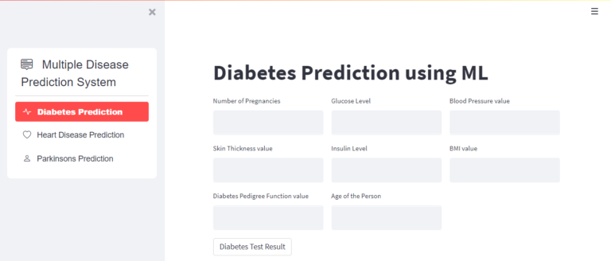

Build a dashboard that will present monthly sales performance by product segment and product category
to help client identifying the segments and categories that have met or exceeded their sales targets, as
well as those that have not met their sales targets.
- Domain: E-commerce
Implemented a robust management system utilizing MySQL for database management and Python's Tkinter for the graphical user interface (GUI). This system streamlines data handling and enhances user interaction through intuitive Tkinter-based interfaces. MySQL ensures efficient storage, retrieval, and manipulation of data, while Tkinter provides a user-friendly environment for seamless navigation and data input.

Developed a multiple disease prediction system leveraging Machine Learning (ML) techniques. This system utilizes supervised learning algorithms such as decision trees, logistic regression, or support vector machines to analyze patient data and predict the likelihood of multiple diseases based on symptoms, medical history, and other relevant factors. The ML model is trained on a comprehensive dataset of patient records to ensure accurate predictions. .

Created a movie management system using JavaScript for functionality, HTML for structure, and CSS for styling. The system allows users to add, edit, delete, and search movies. JavaScript handles dynamic content updates and user interactions, while HTML provides the structure with forms for data input and tables for displaying movie information. CSS styles the interface for a visually appealing user experience.

Developed an advanced Election Analysis Dashboard using Power BI, integrating diverse election datasets to visualize voting trends, demographic patterns, and election outcomes with precision. Implemented interactive visualizations such as dynamic bar charts, geographic maps, and detailed demographic breakdowns to enhance analytical insights.